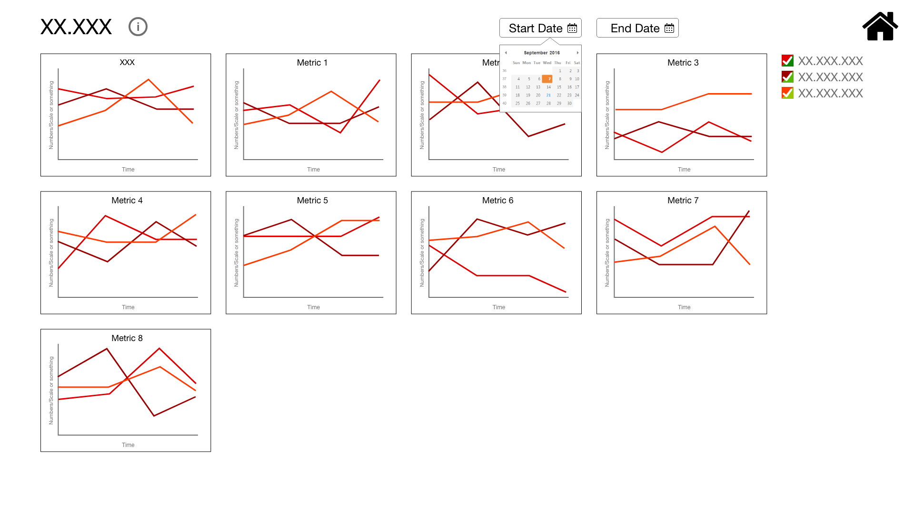

SQUAC UI Design
The Overview
March - May 2018
Completed for Pacific Northwest
Seismic Network
Role: UX Designer & Visual Designer
The Problem
The Pacific Northwest Seismic Network (PNSN), and many other seismic networks, have access to a lot of important information that comes in from their seismic stations. However, it's difficult to sift through all of the data that comes in and issues can be hard to notice quickly. The concept for SQUAC was to develop a system that could take real time data and let seismologists know when something went wrong. For example, data latency for a specific station was unusually low. SQUAC would be like a canary squawking at miners when there was a dangerous level of toxic gas.
The Solution
SQUAC works by having an admin creates groups of seismic stations, metrics, and groups of metrics. This results in specific station groups and metric groups. The user would then be able to login to the main system and see a group of metrics for a specific station group.
I created interface designs for those four different processes. They included;
- Creating Station Groups
- Creating Metric Groups
- Creating Metrics
- Viewing the Metrics and Station Groups
Creating Station Groups
Some background first, a station can contain one to multiple channels. Channels are denoted by three letter names and measure different things - some may look for large movement (by the ocean) and some measure very small movements (by volcanoes).
This interface allows a user to filter based on the station and the channel name. The user would filter down a list of available stations and then add those stations to a group, name the group, and add a description.
Creating Metric Groups
A user can filter through already created metrics by typing in keywords. They can then select metrics to create a group, name the group, and add a description.
Creating Metrics
To create a metric, a user will enter a name, description, the unit the metric uses like time or distance, the source, and the upper and lower threshold. Once saved, the metric can be used when creating metric groups.
Viewing the Metrics and Station Groups
The main page has a table of stations or channels, depending on the selected view, along the left side and metrics along the top. Each cell has a number and a color - green if the metric is within the upper and lower thresholds, red if it is outside, and grey if it doesn't exist. Clicking on any of the stations or channels, metrics, or data cells, will bring up a graph in a popup that allows for more granular filtering of information.
The Process
Over two months I went through research and requirement gathering, as well as iterative design.
Research & Requirement Gathering
I started out by learning the overall flow for the whole system. I had to understand how seismic station groups were created, and by who. I also had to understand how those station groups related to metric groups or if they even needed to be related.
In order to find out the answers to these questions, I talked with the two developers who had previously completed a rough outline of the users and the steps that the users would take. They explained all of the steps and allowed me to ask clarifying questions. I also talked to some of the seismologists to understand what information they wanted to be able to view.
Iterative Design
I completed some sketches based on user feedback, to get an idea of interface layout and information that would be displayed. I then worked on creating mockups in adobe experience design. During the design phase, I consistently talked with the developers to get their opinions. After I had finished a couple iterations I showed some of the seismologists who would be using SQUAC, to get their opinions. Most of the seismologists didn't have a lot of critical feedback because they were so happy to have something that would show them this information.
After receiving feedback from the developers and seismologists, I added additional functionalities, and I added additional information. For example, some of the information that I added was the upper and lower thresholds that determine if a metric is good (green) or bad (red).
Reflection
I completed a prototype that had all of the functionalities plus more. After I had presented this design, the developers had to talk about what steps or iterations they'd go through while on the road to fully completing this system. They couldn't put one hundred percent effort into this system because there is two of them and multiple projects that they work on. If I were to go back, I would design the system in steps to make it easier for the developers to plan out the road map for this project.
For this project, I did not have a good understanding of ADA requirements. I would like to go back through this project, if time allows, and work on ADA compliance. I also feel as though the design could be cleaner and more polished. This comes from a lack of experience with UI design as I normally design with a group of others. With practice and experimentation I think I could push this design further but I didn't have as much time as I would have liked.